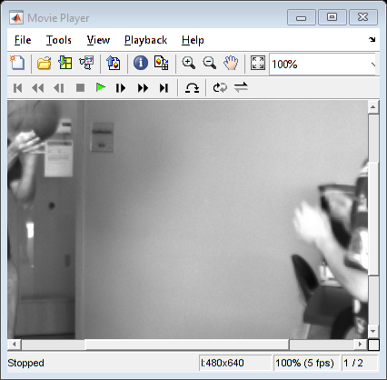
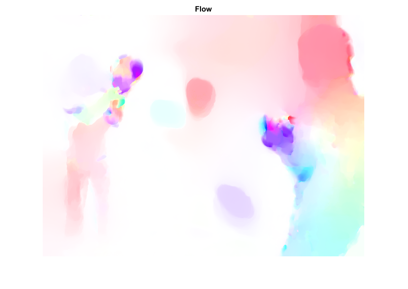
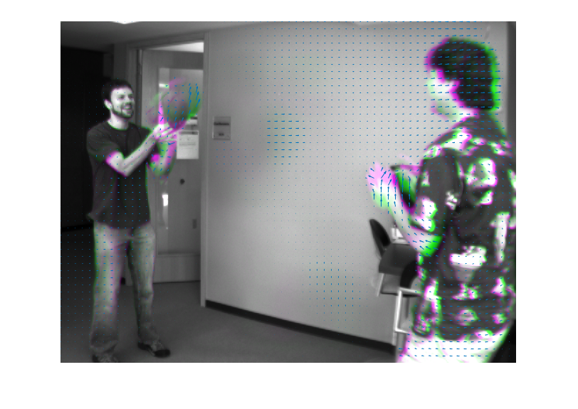

Optical Flow Estimation using Dual TV-L1 method
Sources:
Contents
Load a pair of images
frame0 = cv.imread(fullfile(mexopencv.root(),'test','basketball1.png'), 'Grayscale',true); frame1 = cv.imread(fullfile(mexopencv.root(),'test','basketball2.png'), 'Grayscale',true); assert(isequal(size(frame0), size(frame1)), 'Images should be of equal sizes'); if ~mexopencv.isOctave() && mexopencv.require('images') %HACK: IMPLAY not implemented in Octave implay(cat(4,frame0,frame1), 5); end
Compute optical flow
tvl1 = cv.DualTVL1OpticalFlow(); tic flow = tvl1.calc(frame0, frame1); toc
Elapsed time is 2.466695 seconds.
Draw optical flow
out = drawOpticalFlow(flow);
figure(1), imshow(out), title('Flow')Draw velocities vector field
[X,Y,U,V] = drawVelocities(flow); figure(2) if ~mexopencv.isOctave() && mexopencv.require('images') imshowpair(frame0, frame1) %imshowpair(flow(:,:,1), flow(:,:,2)) else imshow(cat(3, frame1, frame0, frame1)) end hold on quiver(X(:), Y(:), U(:), V(:)); hold off
Write optical flow to file
.flo is a binary file format for flow data specified here: http://vision.middlebury.edu/flow/data/
fileName = fullfile(tempdir(), 'flow.flo')
writeOpticalFlowToFile(flow, fileName);fileName =
'C:\Users\Amro\AppData\Local\Temp\flow.flo'
Helper functions
function [X,Y,U,V] = drawVelocities(flow, steps) if nargin < 2 % subsample in x/y directions for less dense output steps = [10 10]; end [rows,cols,~] = size(flow); R = 1:steps(2):rows; C = 1:steps(1):cols; [X,Y] = meshgrid(C,R); U = flow(R,C,1); V = flow(R,C,2); end function out = drawOpticalFlow(flow, maxrad) % mask of finite values isFlowCorrect = all(~isnan(flow) & abs(flow)<1e9, 3); % determine motion range if nargin < 2 rad = hypot(flow(:,:,1), flow(:,:,2)); maxrad = max(rad(isFlowCorrect)); if isempty(maxrad), maxrad = 1; end end flow = flow ./ maxrad; % compute color cmap = colorWheel(); NCOLS = size(cmap,1); rad = hypot(flow(:,:,1), flow(:,:,2)); a = atan2(-flow(:,:,2), -flow(:,:,1)) / pi; % [-pi,pi] -> [-1,1] fk = (a + 1) / 2 * (NCOLS - 1); % [-1,1] -> [0,NCOLS] k0 = int32(fk); % [0,NCOLS] -> 0:NCOLS k1 = rem(k0 + 1, NCOLS); % 0:NCOLS f = fk - single(k0); % [-0.5,0.5] col0 = reshape(permute(single(cmap(k0+1,:))/255, [1 3 2]), [size(k0) 3]); col1 = reshape(permute(single(cmap(k1+1,:))/255, [1 3 2]), [size(k1) 3]); col = bsxfun(@times, 1-f, col0) + bsxfun(@times, f, col1); if true mask = repmat(rad <= 1, [1 1 3]); tmp = 1 - bsxfun(@times, rad, 1 - col); col(mask) = tmp(mask); % increase saturation with radius col(~mask) = col(~mask) * 0.75; % out of range end out = uint8(255*col); %out = flip(out,3); out(~repmat(isFlowCorrect,[1 1 3])) = 0; end function cmap = colorWheel() if false % relative lengths of color transitions. These are chosen based on % perceptual similarity (e.g. one can distinguish more shades between % red and yellow than between yellow and green) steps = [15 6 4 11 13 6]; cmap = zeros(0,3,'uint8'); for i=1:numel(steps) c = zeros(steps(i),3); switch i case 1 c(:,1) = 255; c(:,2) = fix(255*(0:steps(i)-1)/steps(i)); c(:,3) = 0; case 2 c(:,1) = 255 - fix(255*(0:steps(i)-1)/steps(i)); c(:,2) = 255; c(:,3) = 0; case 3 c(:,1) = 0; c(:,2) = 255; c(:,3) = fix(255*(0:steps(i)-1)/steps(i)); case 4 c(:,1) = 0; c(:,2) = 255 - fix(255*(0:steps(i)-1)/steps(i)); c(:,3) = 255; case 5 c(:,1) = fix(255*(0:steps(i)-1)/steps(i)); c(:,2) = 0; c(:,3) = 255; case 6 c(:,1) = 255; c(:,2) = 0; c(:,3) = 255 - fix(255*(0:steps(i)-1)/steps(i)); end cmap = [cmap; uint8(c)]; end elseif false % similar thing, vectorized implementation steps = [15 6 4 11 13 6]; stops = [ 1 1 0 0 0 1 1; ... % R 0 1 1 1 0 0 0; ... % G 0 0 0 1 1 1 0 % B ]; cmap = zeros(0,3,'uint8'); for i=1:size(stops,2)-1 c = interp1([0 1], stops(:,i:i+1).', linspace(0,1,steps(i)+1)); cmap = [cmap; uint8(255 * c(1:end-1,:))]; end else % a fast approximation using builtin colormap cmap = uint8(255 * hsv(55)); end end function writeOpticalFlowToFile(flow, fileName) assert(isa(flow,'single') && size(flow,3)==2); if false % requires opencv_contrib "optflow" cv.writeOpticalFlow(fileName, flow); else % manually write .flo format fid = fopen(fileName, 'wb', 'l'); % binary, little-endian fwrite(fid, 'PIEH'); % signature fwrite(fid, [size(flow,2) size(flow,1)], 'int32'); % width, height fwrite(fid, permute(flow,[3 2 1]), 'single'); % interleaved (u,v) row-major order fclose(fid); end end